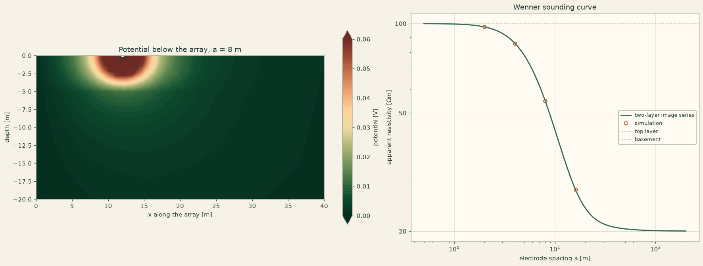
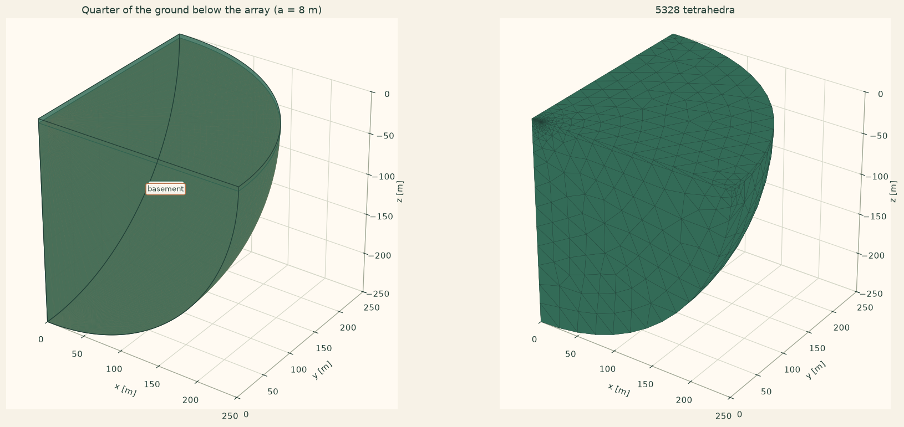

Docs › Examples › Geoelectrical sounding over a layered earth
Electric currents · 3D
Geoelectrical sounding over a layered earth
A Wenner electrode array on a resistive top layer over a conductive basement, whose apparent resistivity over the electrode spacing reveals the layering.
Run locally with OneSimulation. The example downloads are free. Running them requires an activated runtime. OneSimulation 1.0 · CPython 3.13 on macOS (Apple Silicon), Ubuntu 22.04 (x86-64), and Windows x64. Installation and activation · View pilot plans. Scope of the reference checks.


What it computes
OneSimulation solves the steady current flow in one quarter of the ground read from STEP for four electrode spacings, using the symmetry plane along the array and the antisymmetric mid-plane, with the basement embedded in the tetrahedral mesh and quadratic elements; the injected current is the reaction on the hemispherical electrode. The script that builds the STEP files comes with the notebook.
What it checks
Over a homogeneous ground the apparent resistivity is 99.96 Ohm m against 100 Ohm m (-0.04 %); over the two-layer earth the values 97.40, 85.77, 54.90 and 27.64 Ohm m at 2, 4, 8 and 16 m spacing match the exact image series within 0.07 %.
Geometry
The notebook starts at the import of the CAD files geoelectric_wenner_sounding.step, geoelectric_wenner_sounding_16m.step, geoelectric_wenner_sounding_2m.step, geoelectric_wenner_sounding_4m.step, geoelectric_wenner_sounding_basement.step: STEP (AP242), readable by any CAD program, with the names of the faces that the boundary conditions use. Put them next to the notebook.


The geometry script
The script geoelectric_wenner_sounding_geometry.py builds the geometry with the CAD objects of OneSimulation and writes the files. Change a dimension there, run it, and run the notebook again.
"""Geometry of the OneSimulation example "Geoelectrical sounding over a layered earth".
Builds one quarter of the ground below a Wenner electrode array with the CAD objects of
OneSimulation: a quarter of a half ball of 250 m radius, cut by the mid-plane of the array (face
group midplane) and by the vertical plane along the array (symmetry); the ground surface is
surface, the far boundary outer, and the hemispherical current electrode A (radius 25 cm) at
x = 1.5 a is electrode. One file per electrode spacing a: geoelectric_wenner_sounding.step
(a = 8 m) and geoelectric_wenner_sounding_2m.step, ..._4m.step and ..._16m.step. The
basement below the 5 m thick top layer is written to geoelectric_wenner_sounding_basement.step.
"""
from onesim.cad.d3 import Box, Sphere
ground, electrode, layer = 250.0, 0.25, 5.0
quarter = Box(
length=ground, width=ground, height=ground, origin=(0.0, 0.0, -ground)
).named("cut")
for spacing in (2.0, 4.0, 8.0, 16.0):
region = (Sphere(radius=ground).named("far") & quarter) - Sphere(
radius=electrode, origin=(1.5 * spacing, 0.0, 0.0)
).named("a")
faces = region.boundaries
region = region.grouped(
electrode=region.select(faces=lambda face: face.id.startswith("a.")),
midplane=faces["cut.x_min"],
symmetry=faces["cut.y_min"],
surface=faces["cut.z_max"],
outer=region.select(faces=lambda face: face.id.startswith("far")),
)
region.save(
"geoelectric_wenner_sounding.step"
if spacing == 8.0
else f"geoelectric_wenner_sounding_{round(spacing)}m.step"
)
(
Sphere(radius=ground)
& Box(
length=ground, width=ground, height=ground - layer, origin=(0.0, 0.0, -ground)
)
).save("geoelectric_wenner_sounding_basement.step")The notebook
The complete notebook, cell by cell. Run it to produce the figures and the comparison printout.
In a vertical electrical sounding four electrodes stand in a line on the ground at equal spacing \(a\) (Wenner array): the current \(I\) enters at A and leaves at B, the voltage \(\Delta V\) is measured between the inner electrodes M and N. Over a homogeneous ground of resistivity \(\rho\) the reading gives \(\rho=2\pi a\,\Delta V/I\); over any other ground this formula defines the apparent resistivity \(\rho_a(a)\). Small spacings see the top layer, large spacings the ground deeper down.
Here the ground has a top layer of \(\rho_1=100\ \Omega\)m and \(h=5\) m thickness over a basement of \(\rho_2=20\ \Omega\)m. The potential obeys \(\nabla\cdot(\sigma\nabla V)=0\) with \(\sigma=1/\rho\), the equation of electrostatics with the conductivity in place of the permittivity.
The array is symmetric about the vertical plane along it and antisymmetric about its mid-plane. One quarter of the ground (a quarter of a half ball of radius 250 m) with the current electrode A (a hemisphere of 25 cm radius) comes from the CAD file geoelectric_wenner_sounding.step (\(a=8\) m) and from one file per other spacing, ..._2m.step, ..._4m.step and ..._16m.step; the basement is geoelectric_wenner_sounding_basement.step. The script geoelectric_wenner_sounding_geometry.py builds them with the CAD objects of OneSimulation.
| face | condition |
|---|---|
electrode (A) | \(V=V_A\) |
midplane | \(V=0\) (antisymmetry, electrode B is the mirror image of A) |
symmetry, surface | no current |
outer | no current (far away) |
Reference. For a two-layer earth the potential of a point source follows from an infinite series of images in the layer boundary. With the reflection coefficient \(k=(\rho_2-\rho_1)/(\rho_2+\rho_1)\) the Wenner apparent resistivity is (Telford, Geldart and Sheriff, Applied Geophysics, 2nd ed., Sec. 8.5)
import numpy as np
from onesim.cad.d2 import Plane
from onesim.cad.exchange import load
from onesim.meshing import TetrahedralMesher
from onesim.numerics import Numerics
from onesim.numerics.fem import FiniteElement, Lagrange
from onesim.numerics.linear import SparseDirect
from onesim.physics.electrostatics import (
FixedPotential,
PoissonEquation,
ZeroNormalElectricDisplacement,
)
from onesim.simulation import Problem, Simulation, regionwise
from onesim.visualization import plots, theme
theme.set()Geometry and mesh
The basement is embedded in the mesh, so that the layer boundary consists of cell faces. The cells are about 8 cm at the electrode, a twentieth of the spacing at the potential electrode M, and grow to 25 m far away.
spacings = (2.0, 4.0, 8.0, 16.0)
grounds = {
a: load(
"geoelectric_wenner_sounding.step"
if a == 8.0
else f"geoelectric_wenner_sounding_{round(a)}m.step"
)
for a in spacings
}
basement = load("geoelectric_wenner_sounding_basement.step")
electrode, layer = 0.25, grounds[8.0].size[2] - basement.size[2]
meshes = {
a: TetrahedralMesher(
target_size=25.0,
minimum_size=electrode / 4,
geometry_order=2,
embedded_regions=(basement,),
size_field=lambda points, a=a: np.clip(
np.minimum(
electrode / 3
+ 0.5 * np.linalg.norm(points - (1.5 * a, 0.0, 0.0), axis=1),
a / 20 + 0.5 * np.linalg.norm(points - (0.5 * a, 0.0, 0.0), axis=1),
),
electrode / 4,
25.0,
),
).generate(grounds[a])
for a in spacings
}
faces = grounds[8.0].boundaries
view = plots.Camera(elevation=30, azimuth=-55)
fig = plots.figure(1, 2, size=(14, 6))
plots.geometry(
[grounds[8.0].named("top layer"), basement.named("basement")],
camera=view,
title="Quarter of the ground below the array (a = 8 m)",
ax=fig[0],
)
plots.mesh(
meshes[8.0],
groups=("all",),
legend=False,
camera=view,
title=f"{meshes[8.0].cell_count} tetrahedra",
ax=fig[1],
)
plots.show()Model
regionwise gives the basement its conductivity. Electrode A is held at 1 V; the current it injects is twice the reaction on the half electrode in the quarter. The spacing of 8 m is also solved over a homogeneous ground.
rho1, rho2 = 100.0, 20.0
numerics = Numerics(
spatial=FiniteElement(element=Lagrange(order=2)), linear_solver=SparseDirect()
)
runs = [(a, rho2) for a in spacings] + [(8.0, rho1)]
models = [
PoissonEquation(
domain=grounds[a].volume,
permittivity=regionwise(((basement, 1 / lower),), default=1 / rho1, unit="S/m"),
charge_density=0.0,
)
for a, lower in runs
]
potentials = [
Simulation(
problem=Problem(
name="Wenner sounding",
geometry=grounds[a],
physics=(model,),
boundary_conditions=(
FixedPotential(
boundary=grounds[a].boundaries.electrode, physics=model, value=1.0
),
FixedPotential(
boundary=grounds[a].boundaries.midplane, physics=model, value=0.0
),
ZeroNormalElectricDisplacement(
boundary=grounds[a].boundaries.symmetry
| grounds[a].boundaries.surface
| grounds[a].boundaries.outer,
physics=model,
),
),
),
mesh=meshes[a],
numerics=numerics,
)
.solve_stationary()
.field(model.potential)
for model, (a, _) in zip(models, runs)
]Results
The voltage between M and N is twice the potential at M; the apparent resistivity follows from the Wenner formula.
reflection = (rho2 - rho1) / (rho2 + rho1)
n = np.arange(1, 200)
two_layer = lambda a: rho1 * (
1
+ 4
* np.sum(
reflection**n
* (
1 / np.sqrt(1 + (2 * n * layer / a) ** 2)
- 1 / np.sqrt(4 + (2 * n * layer / a) ** 2)
)
)
)
apparent = [
4
* np.pi
* a
* potential.evaluate([(0.5 * a, 0.0, 0.0)])[0]
/ (2 * potential.reaction(grounds[a].boundaries.electrode))
for potential, (a, _) in zip(potentials, runs)
]
print(
f"homogeneous ground, a = 8 m: apparent resistivity {apparent[-1]:.3f} Ωm, true {rho1:.1f} Ωm ({100 * (apparent[-1] / rho1 - 1):+.3f} %)"
)
print(
"spacing a tetrahedra apparent resistivity [Ωm] two-layer series [Ωm] deviation"
)
for a, mesh, value in zip(spacings, meshes.values(), apparent):
print(
f"{a:7.0f} m {mesh.cell_count:12d} {value:23.3f} {two_layer(a):23.3f} {100 * (value / two_layer(a) - 1):+11.3f} %"
)
print(
f"reflection coefficient k = {reflection:.4f}; the curve tends to {rho1:.0f} Ωm for small and {rho2:.0f} Ωm for large spacings"
)Figure
The potential in the vertical plane along the array for \(a=8\) m, where the current bends into the conductive basement, and the sounding curve against the two-layer series.
wide = np.geomspace(0.5, 200.0, 200)
fig = plots.figure(1, 2, size=(16, 6))
plots.section(
potentials[2],
plane=Plane(origin=(0, 1e-6, 0), normal=(0, 1, 0)),
component=lambda V, position: np.ravel(V),
limits=(0, 0.06),
contours=13,
subdivisions=2,
label="potential [V]",
xlimits=(0, 40),
ylimits=(-20, 0),
xlabel="x along the array [m]",
ylabel="depth [m]",
title="Potential below the array, a = 8 m",
ax=fig[0],
)
plots.line(
wide,
{"two-layer image series": [two_layer(a) for a in wide]},
points={"simulation": (list(spacings), apparent[: len(spacings)])},
hlines={"top layer": rho1, "basement": rho2},
scale="loglog",
xlabel="electrode spacing a [m]",
ylabel="apparent resistivity [Ωm]",
title="Wenner sounding curve",
ax=fig[1],
)
plots.show()Going further
Swap the resistivities to model a resistive basement (positive \(k\)), add a third layer to the geometry script, or move to a Schlumberger array by changing the electrode positions; a buried conductive body in place of the basement turns the sounding into a resistivity survey.